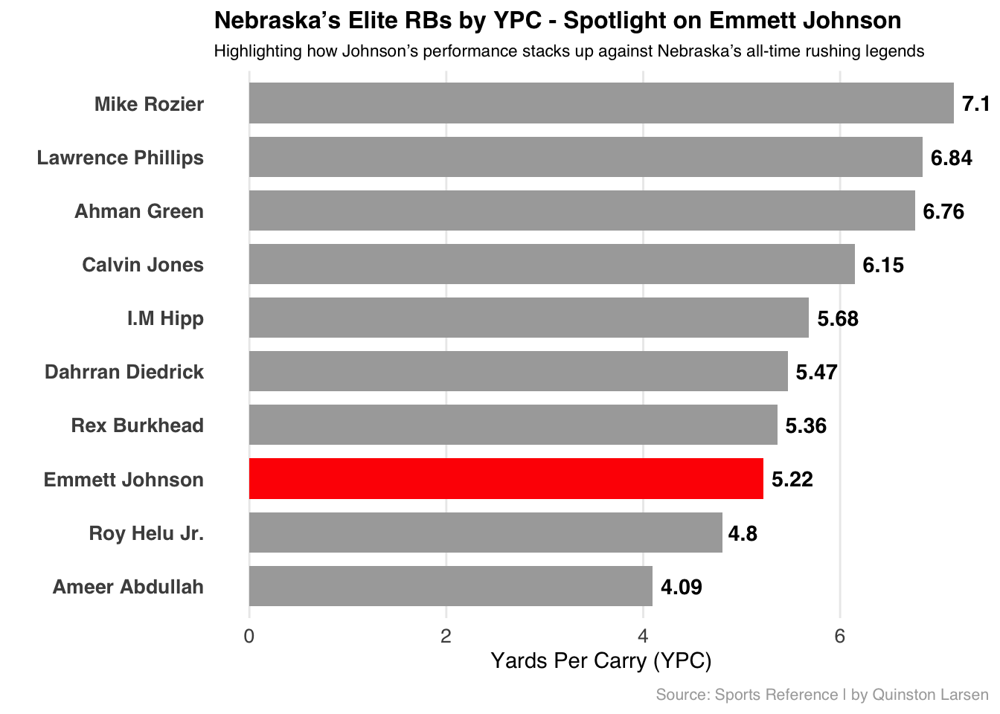
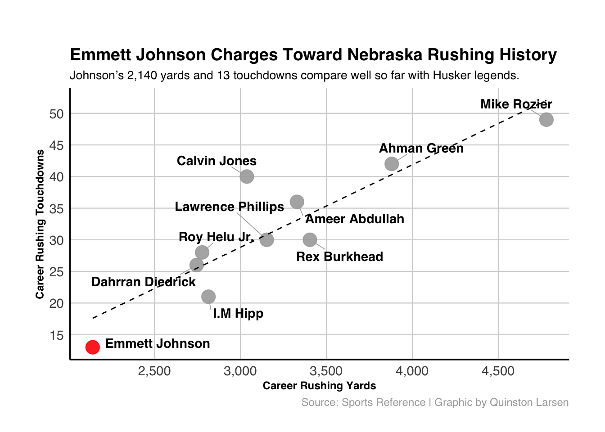
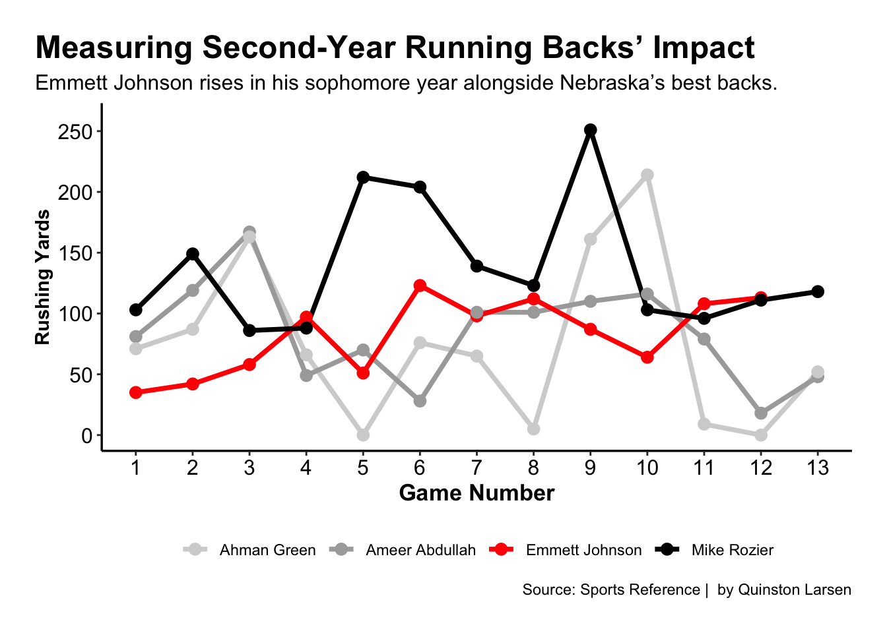

Code
library(tidyverse)
library(scales)
library(ggrepel)
nebraska_rbs <- read_csv("data/nebraskarushing.csv")Quinston Larsen
November 4, 2025
Is Emmett Johnson Quietly Becoming Nebraska’s Next Great Running Back?
Author Published Quinston Larsen November 14, 2025
With Nebraska Football being in a decline the past few years, huskers fans have not had much to hope for. From 2017-2023 getting bowl eligible was what every fan wanted. It seemed as if every season was a tease.
But with Junior running back Emmett Johnson, things have looked promising. With Johnson carrying a lot of the responsibility on offense, he has come into the spotlight. Making Husker fans the most hopeful they have been in years.
Emmett Johnson is slowly moving up the ranks of all-time Corn Husker running back legends.
Let’s look at some numbers (Emmett Johnson’s Stats are only from his Freshman and Sophomore year)
Sports Reference’s college football site produces yards per carry for each player. YPC is the total yards divided by total carries for each player. This is used to see how efficient a player is each time they touch the ball.
The first question we’ll ask and answer is by YPC, showing where Emmett Johnson ranks in YPC among the top 10 running backs in Nebraska history.
nebraska_rbs <- tibble(
Player = c("Mike Rozier", "Ahman Green", "Ameer Abdullah",
"Rex Burkhead", "Roy Helu Jr.", "Lawrence Phillips",
"Calvin Jones", "I.M Hipp", "Dahrran Diedrick", "Emmett Johnson"),
Carries = c(668, 574, 813, 635, 578, 461, 494, 495, 502, 410),
Yards = c(4780, 3880, 3329, 3404, 2777, 3153, 3037, 2814, 2745, 2140)
)
nebraska_rbs <- nebraska_rbs %>%
mutate(YPC = Yards / Carries)
nebraska_rbs$Player <- factor(
nebraska_rbs$Player,
levels = nebraska_rbs$Player[order(nebraska_rbs$YPC)]
)
nebraska_rbs$Color <- ifelse(nebraska_rbs$Player == "Emmett Johnson", "red", "darkgrey")
ggplot(nebraska_rbs, aes(x = Player, y = YPC, fill = Color)) +
geom_col(width = 0.75) +
geom_text(aes(label = round(YPC, 2)), # show YPC to 2 decimals
hjust = -0.2, size = 3.8, color = "black", fontface = "bold") +
scale_fill_identity() +
coord_flip() +
labs(
title = "Nebraska’s Elite RBs by YPC - Spotlight on Emmett Johnson",
subtitle = "Highlighting how Johnson’s performance stacks up against Nebraska’s all-time rushing legends",
x = "",
y = "Yards Per Carry (YPC)",
caption = "Source: Sports Reference | by Quinston Larsen"
) +
theme_minimal(base_family = "Helvetica") +
theme(
plot.title = element_text(face = "bold", size = 12),
plot.subtitle = element_text(size = 8.5),
axis.text.y = element_text(size = 10, face = "bold"),
axis.text.x = element_text(size = 10),
plot.caption = element_text(size = 8, color = "darkgrey", margin = margin(t = 8)),
panel.grid.major.y = element_blank(),
panel.grid.minor = element_blank()
)
Johnson has the eighth best YPC when paired up against the greats. Meaning that he has edged out Nebraska great Ameer Abdullah, being in great company. If he keeps this up he has the opportunity to finish higher.
But what about career yards and touchdowns? Where does he rank among the same top ten running backs?
nebraska_rbs <- tibble(
Player = c("Mike Rozier", "Ahman Green", "Ameer Abdullah",
"Rex Burkhead", "Roy Helu Jr.", "Lawrence Phillips",
"Calvin Jones", "I.M Hipp", "Dahrran Diedrick", "Emmett Johnson"),
Yards = c(4780, 3880, 3329, 3404, 2777, 3153, 3037, 2814, 2745, 2140),
TDs = c(49, 42, 36, 30, 28, 30, 40, 21, 26, 13)
)
ggplot(nebraska_rbs, aes(x = Yards, y = TDs)) +
geom_point(aes(color = Player == "Emmett Johnson"), size = 5, alpha = 0.9) +
scale_color_manual(values = c("TRUE" = "red", "FALSE" = "darkgrey"), guide = "none") +
geom_text_repel(
aes(label = Player),
family = "Helvetica",
size = 3.8,
fontface = "bold",
box.padding = 0.6,
point.padding = 0.5,
force = 3,
max.overlaps = Inf,
segment.color = "darkgrey",
segment.size = 0.3
) +
geom_smooth(method = "lm", se = FALSE, color = "black",
linetype = "dashed", linewidth = 0.5) +
labs(
title = "Emmett Johnson Charges Toward Nebraska Rushing History",
subtitle = "Johnson’s 2,140 yards and 13 touchdowns compare well so far with Husker legends.",
x = "Career Rushing Yards",
y = "Career Rushing Touchdowns",
caption = "Source: Sports Reference | Graphic by Quinston Larsen"
) +
scale_x_continuous(breaks = seq(0, 5000, 500), labels = scales::comma) +
scale_y_continuous(breaks = seq(0, 60, 5)) +
theme_minimal(base_family = "Helvetica") +
theme(
plot.title = element_text(face = "bold", size = 14),
plot.subtitle = element_text(size = 10),
axis.title = element_text(face = "bold", size = 9),
axis.text = element_text(size = 11),
panel.background = element_rect(fill = "white", color = NA),
plot.background = element_rect(fill = "white", color = NA),
panel.grid.major = element_line(color = "lightgrey", linewidth = 0.4),
panel.grid.minor = element_blank(),
plot.caption = element_text(size = 9, color = "darkgrey"),
axis.line = element_line(color = "black", linewidth = 0.6),
plot.margin = margin(t = 40, r = 30, b = 20, l = 30) # added extra top and side margins
)`geom_smooth()` using formula = 'y ~ x'
Admittedly, Johnson’s numbers do not pop out of the screen but these are his stats up too his sophomore season. Now it does not look as bad compared to the others full careers
With it only being up to his sophomore season, let’s look at Emmett’s sophomore season compared to the the top three running back’s sophomore seasons.
johnson <- tibble(
Game = 1:12,
Opponent = c("Minnesota", "Colorado", "NIU", "Louisiana Tech",
"Michigan", "Illinois", "Northwestern", "Purdue",
"Michigan St", "Maryland", "Wisconsin", "Iowa"),
RushingYards = c(35, 42, 58, 97, 51, 123, 98, 112, 87, 64, 108, 113),
Player = "Emmett Johnson"
)
Rozier <- tibble(
Game = 1:13,
RushingYards = c(103, 149, 86, 88, 212, 204, 139, 123, 251, 103, 96, 111, 118),
Player = "Mike Rozier"
)
Abdullah <- tibble(
Game = 1:13,
RushingYards = c(81, 119, 167, 49, 70, 28, 101, 101, 110, 116, 79, 18, 48),
Player = "Ameer Abdullah"
)
Green <- tibble(
Game = 1:13,
RushingYards = c(71, 87, 163, 66, 0, 76, 65, 5, 161, 214, 9, 0, 52),
Player = "Ahman Green"
)
all_rbs <- bind_rows(johnson, Rozier, Abdullah, Green)
custom_colors <- c(
"Emmett Johnson" = "red",
"Mike Rozier" = "black",
"Ameer Abdullah" = "darkgrey",
"Ahman Green" = "lightgrey"
)
ggplot(all_rbs, aes(x = Game, y = RushingYards, group = Player, color = Player)) +
geom_line(linewidth = 1.3) +
geom_point(size = 2.8) +
geom_point(
data = subset(all_rbs, Player == "Emmett Johnson" & RushingYards == max(RushingYards)),
aes(x = Game, y = RushingYards),
color = "black", size = 4
) +
geom_text(
data = subset(all_rbs, Player == "Emmett Johnson" & RushingYards == max(RushingYards)),
aes(label = paste0("Season high: ", RushingYards, " yds")),
vjust = -1, hjust = 0.5, color = "black", size = 2, fontface = "bold"
) +
scale_color_manual(values = custom_colors) +
scale_x_continuous(breaks = seq(1, 13, 1)) +
scale_y_continuous(breaks = seq(0, 250, 50), limits = c(0, 260)) +
labs(
title = "Measuring Second-Year Running Backs’ Impact",
subtitle = "Emmett Johnson rises in his sophomore year alongside Nebraska’s best backs.",
x = "Game Number",
y = "Rushing Yards",
caption = "Source: Sports Reference | by Quinston Larsen"
) +
theme(
plot.title.position = "plot",
plot.title = element_text(face = "bold", size = 18, color = "black"),
plot.subtitle = element_text(size = 12, color = "black"),
axis.title.x = element_text(face = "bold", size = 13, color = "black"),
axis.title.y = element_text(face = "bold", size = 11, color = "black"),
axis.text = element_text(size = 12, color = "black"),
panel.background = element_rect(fill = "white", color = NA),
plot.background = element_rect(fill = "white", color = NA),
panel.grid.major = element_blank(),
panel.grid.minor = element_blank(),
axis.line.y = element_line(color = "black", linewidth = 0.6),
axis.line.x = element_line(color = "black", linewidth = 0.6),
plot.margin = margin(20, 20, 20, 20),
legend.position = "bottom",
legend.title = element_blank()
)
Emmett kept up with the top three running backs when compared to their second seasons.
With Johnson in his junior year and having one more year available to play there is no question that he could be in the conversation as one of the best running backs to ever play at Nebraska.
Where will Emmett Johnson rank among the greats? His stats say near the top.